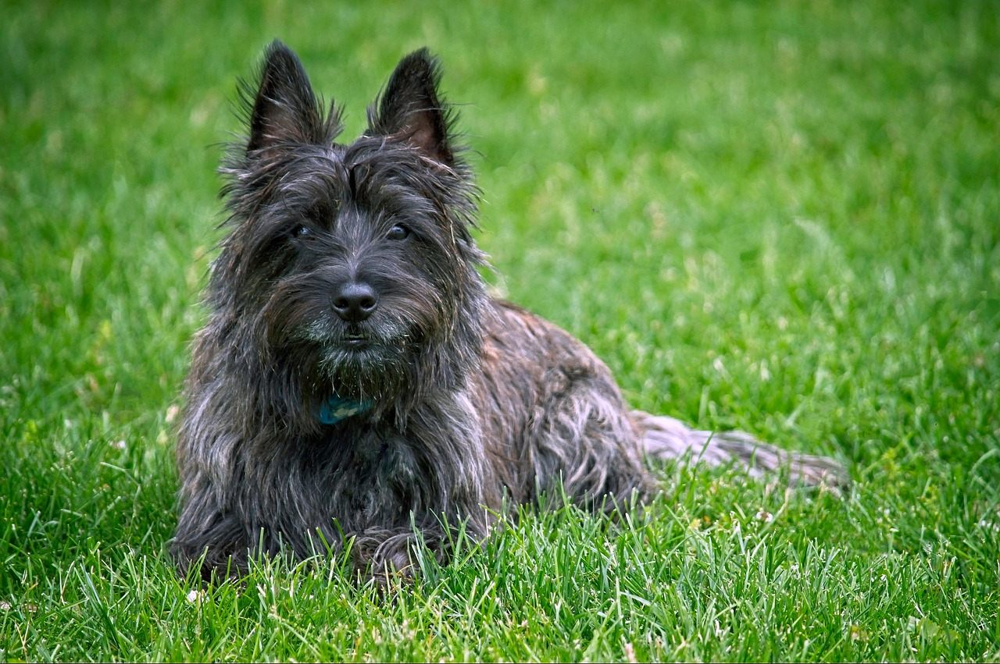

Welcome to the wonderful world of Cairn Terriers! Through this website, you will quickly learn why
British breed clubs refer to this dog breed as “The Best Little Pal in the World.”
The Cairn Terrier has its origins in approximately the 1600s, according to the American Kennel Club
(AKC). The breed emerged from the Western Highlands, particularly the Isle of Skye. The AKC
confirmed that by the turn of the 20th century, British terrier breeders had sorted out the Scottish
earthdog groups of terriers into the separate and distinct dog breeds of of Cairn, Scottish, Skye
and West Highland terriers. The AKC first recognized the Cairn Terrier dog breed in 1913.
Cairn Terriers were primarily bred to patrol game preserves and farms of Scotland, according to
Vanessa Richie's book "The Complete Guide to Cairn Terriers." In Scotland, mounds of stones were
used as boundary markers or grave markers. These mounds of stones were known as cairns. Rodents
would live within and beneath these rock piles. The main job of the Cairn Terrier was to dig into
these cairns and remove the vermin. The dogs also were bred to hunt foxes, otters, and related
animals. Independence, courage, alertness, and hardiness were among the key characteristics needed
and bred for. Cairn Terriers have long life spans for dogs, usually between 12 and 15 years of age.
The Cairn Terrier dog breed earned a place in the spotlight in 1939. The Cairn Terrier Terry, owned
by Hollywood dog trainer Carl Spitz, was cast as Toto in the film “The Wizard of Oz.” For her
participation in “The Wizard of Oz,” Terry was paid $125 per week, more than some human actors on
the film.
This site will provide information about the Cairn Terrier's breed characteristics, coat maintenance,
and the dog's necessary exercise and mental stimulation needs.
According to Vanessa Richie's book "The Complete Guide to Cairn Terriers," The average Cairn Terrier
is between 9.5 and 15 inches tall. Weight is on average between 13 and 15 pounds. The AKC indicates
that standard markings include black ears, black around the mask or face, and black markings.
The Cairn Terrier can come in a variety of different colors. According to the AKC, these include:
Brindle
Cream
Gray
Gray Brindle
Red
Red Brindle
Silver
Wheaten
Cream Brindle
Black
Red Wheaten
Silver Brindle
Wheaten Brindle
Silver Wheaten
However, a Cairn Terrier cannot be white, as this is the color exclusive to the similar breed of the
West Highland Terrier.
Cairn Terriers have a true terrier personality. They are friendly with other dogs and amazing family
dogs. Cairn Terriers insist on being part of family activities. They need to live indoors with their
families, rather than outdoors in dog houses. They not only have a deep love and loyalty towards
their families, but they are also well-known for having a great affinity for children. Cairn
Terriers are friendly and curious, eager to interact with people they meet. They do not do well when
left alone for long periods of time, as some may be prone to digging and barking.
Cairn Terriers are intelligent and love positive reinforcement training, but also have an independent
stubborn streak. They have a high prey drive and therefore require a fenced in yard and leashed
walks.
Cairn Terriers are very curious dogs, and love to go along with their humans, whether on a day trip
or on vacation. They love parks and outdoor spaces. Some stores such as home improvement stores, pet
stores, and craft stores welcome dogs. Some outdoor malls also welcome dogs. These can be fun places
to take your Cairn Terrier. Always check with individual stores about their dog policies before
bringing your Cairn Terrier to a store.
Richie, Vanessa. The Complete Guide to Cairn Terriers LP Media Inc. Publishing, 2022.
Photo courtesy of Pixabay
Carousel photos courtesy of Pixabay, carousel JavaScript courtesy of W3 Schools
Coat Maintenance
Cairn Terriers have a double coat of hair and fur, bred to repel water and dirt. Cairn Terriers have
sensitive skin and should not be frequently bathed.
In general, coat maintenance for a Cairn Terrier requires brushing between two and four times per
week. This can take an average of 10 to 15 minutes. According to Vanessa Richie's book "The Complete
Guide to Cairn Terriers," dead hair should be removed about once per month in a process called
rolling, using a stripping knife or stripping stone. Seeking a professional dog groomer between two
to three times per year to do complete hand stripping is often a good idea. However, Cairn Terrier
owners should have a few basic tools at their disposal to do the basic, regular coat maintenance and
grooming. According to Richie's book, these include:
Pin brush and comb to remove mats.
Slicker brush.
Small, blunt scissors to cut long hair around the face.
Stripping knives to help remove undercoat fur.
Shampoo: Isle of Dogs No. 33 for coarse, hard coats is recommended.
Nail trimmers.
Dog specific toothbrush and toothpaste. Do not substitute with human toothpaste.
As every dog owner of any breed should know, brushing the dog is about more than just coat
maintenance. It is an opportunity for a health check. Owners should always check their dogs over
thoroughly for skin problems, lumps, flea or tick bites or other health concerns during coat
maintenance.
The video courtesy of YouTube and Paragon School of Pet Grooming illustrates a small portion of the
coat stripping process, or rolling
Resources Consulted:
Richie, Vanessa.The Complete Guide to Cairn Terriers LP Media Inc. Publishing, 2022.
Video courtesy of YouTube and Paragon School of Pet Grooming
Exercise & Mental Stimulation

Cairn Terrier dog
Cairn Terriers are an active breed. It is recommended in Vanessa Richie's book "The Complete Guide to
Cairn Terriers" that every Cairn Terrier receive a 30-minute vigorous walk with their humans in the
morning, and another in the afternoon or evening is also recommended. This helps the dog to maintain
a healthy weight, provides dog and human bonding time, and helps provide necessary mental
stimulation. However, Cairn Terriers should always be leashed during walks. They should never
permitted off leash, due to their instinct to chase and hunt small animals like squirrels. Adequate
physical and mental stimulation for a Cairn Terrier helps reduce boredom and any potential unwanted
behaviors associated with it, such as digging, barking and chewing.
On days when weather conditions are not favorable to a good walk, there are lots of activities to
help keep a Cairn Terrier mentally and physically stimulated at home. In her book, "The Complete
Guilde to Cairn Terriers," Richie recommends scent work as a fun activity for both the dog and
human. To start, get one of your Cairn Terrier's favorite toys or treats and hide it in a small room
or closet. In the beginning, the dog should have a limited area in order to learn to find the treat
or toy. Use the "find" command. Once your dog finds the treat or toy, reward him or her with
affection and treats. Cairn Terriers are born to hunt, so once your dog gets the idea of the "find,"
command, you can use a larger indoor space. The find game can also be done outdoors in good weather.
The audio plays a terrier barking.
Resources Consulted:
Richie, Vanessa. The Complete Guide to Cairn Terriers LP Media Inc. Publishing, 2022.
Contact
Have questions about the Cairn Terrier dog breed? Ask us! We can provide additional information and resources. Some additional information we can provide includes nutrition guidelines, general health issues to ask your veterinarian about, how to locate breeders or rescues, how to prepare to bring a puppy or a senior dog into your home, and more. We can also refer you to helpful resources at the American Kennel Club (AKC) and Cairn Terrier Club of America. There are also regional groups in individual U.S. states, such as Cairn Terrier Club of Greater Detroit, that can help you to learn more about the dog breed.
We can further help you with planning your budget, preparing your family to bring a Cairn Terrier dog into your home, and socialization. This can include preparing to introduce your Cairn Terrier to other pets you may have. Most of all, we can prepare you to have fun with your Cairn Terrier! There are many resources we can help you with if you are interested in fun activities that you and your Cairn Terrier can do together. Some of these activities include barn hunts, agility competitions, AKC Canine Good Citizen Skills, dock diving, earthdog trials, obedience, scent work, rally sports, therapy dog training, conformation dog shows, the FastCAT 100-yard dash, and more.